HELLO
Stef Ryckmans
FACEBOOK LINK
INSTAGRAM LINK
LINKEDIN
LINK
Hallo! Ik ben Stef, een enthousiaste student met een passie voor IT-programmeren.
Ik hou ervan om nieuwe dingen te leren en mezelf continu uit te dagen.
In mijn vrije tijd ben ik vaak te vinden op mijn laptop.
Ik ben gedreven om altijd de beste te zijn op elk gebied dat ik beoefen.
Deze Website is mijn persoonlijke portfolio en een manier om een klein sprankeltje van mezelf te laten zien.
Gedurende mijn opleiding zal ik hier terugkomen en mijn portfolio updaten tot ik klaar ben voor het echte werk.
Geniet ervan en misschien tot nog eens!
CV
About me
Hallo, ik ben Stef, een enthousiast toekomstig programmeur die nog aan het studeren is.
26 jaar en woonachtig in Genk. Ik wil graag mijn droom waarmaken om zelf software en/of applicaties te ontwikkelen.
Werk Ervaringen
Logistiek Medewerker
- Werkgever: TOYOTA ELC
- Duur: 6 maanden
- Scannen, sorteren, uitpakken, binnen, picking van warehouse goederen.
Compounder / Menger
- Werkgever: Esteé Lauder
- Duur: Maart 2021 - Juni 2024
- Mengen, opwarmen, koelen van grondstoffen dat uiteindelijk een eindproduct opbrengt zoals zeep, scrub, shampoo, parfum, etc.. voor de merken Tom Ford, Aveve, Bobby Brown, La Mer, etc...
Soft & Hard Skills
| Skill | Ervaring |
|---|---|
| C# | Basis kennis. |
| HTML | Basis kennis. |
| CSS | Basis kennis. |
| Data (SQL) | Basis kennis. |
| Skill | Ervaring |
|---|---|
| Problemen oplossen | Verslaafd aan problemen oplossen. |
| Aanpassingsvermogen | Goed in het aanpassen in verschillende omgevingen. |
| Creativiteit | Creatief denken is 1 van mijn grootste skills. |
| Geduld | Een kalme en geduldige geest. |
Behaalde Diploma's
- 4de middelbaar - Publiciteit
- Misschien binnenkort graduaat programmeren
PORTFOLIO
LOGBOEK
| Lesweek | Inhoud | Deadline |
|---|---|---|
| Week 1 | Introductie Scratch Uitleg PE1 (Scratch) |
|
| Week 2 | GIT Github POP intro, X-factor en SDG's POP motivatie en kernwaarden Oriënteringstraject |
|
| Week 3 | POP reflecteren POP autonomie en verantwoordelijkheid Versioning met GIT Uitleg PE2 (GIT taak 1) Uitleg PE3 (reflecteren) |
PE1 (Scratch) |
| Week 4 | LDB test GIT POP personal branding POP plannen en organiseren Uitleg PE4 (plannen) Uitleg PE5 (GIT taak 2) |
PE2 (GIT taak 1) PE3 (reflecteren) |
| Week 5 | Uitleg portfolio Gastspreker(s) + LDB test Uitleg PE6 (carrièrekompas) |
PE4 (plannen) PE5 (GIT taak 2) |
| Week 6 | POP leren analyseren van projecten GIT merge Uitleg web project sprint 1 |
PE6 (carrièrekompas) |
| Herfstvakantie | ||
| Week 7 | Uitleg C# project sprint 1 | |
| Week 8 | C# documentatie + debugging maandaggroep (ABC) les valt weg |
Indienen C# project sprint 1 |
| Week 9 | PE7 C# project sprint 1 Uitleg C# project sprint 2 |
|
| Week 10 | Uitleg web project sprint 2 PE8 C# debugging |
Indienen C# project sprint 2 |
| Week 11 | PE9 C# project sprint 2 Uitleg C# project sprint 3 |
|
| Week 12 | Introductie Corda Campus Uitleg web project sprint 3 LDB Codebeoordeling |
Indienen C# project sprint 3 |
| Week 13 | PE10 C# project sprint 3 Vragen portfolio Infosessie Thalento |
PE11 (web project) |
| Kerstvakantie | ||
| Kertsvakantie | ||
| Week 14 | Afwerking portfolio | PE12 (portfolio) |
ONTWIKKELING
Mijn keuze voor deze opleiding
Waarom kies je voor de opleiding programmeren?
Ik heb hiervoor gekozen omdat ik al vaak gedacht heb om te leren programmeren.
Toen ik nog aan het werken was, dan was het aanleren van een programmeertaal nog vrij moeilijk door het gebrek aan tijd.
Vroeger toen ik jonger was en in het middelbaar zat was dit ook al 1 van mij goals.
Door financiële redenen ging dit echter nooit lukken en moest ik een andere study richting nemen.
Nu heb ik de kans gevonden en gekregen om mijn droom waar te maken om zelf software en/of applicaties te ontwikkelen.
Echter heb ik ook hiervoor gekozen omdat een diploma in programmeren een grote achievement is.
Het middelbaar heb ik niet vervolledigd en via deze manier kan het verleden recht zetten.
Waarom denk je dat dit beroep bij jou past?
Dit beroep zal zeker en vast voor mij passen omdat ik wel uren op mijn laptop kan zitten.
Het is een verslavend gevoel wanneer ik programmeer en problemen moet oplossen zodat mijn applicatie werkt.
Ik ben altijd al gefascineerd door programmeren.
De nieuwsgierigheid achter hoe sommige applicaties werken is verbazingwekkend groot.
Graag wil ik zelf de ontwikkelaar worden achter deze geweldige applicaties en wie weet verander of verbeter ik een bedrijf.
Ik heb al vaker geprobeerd te coderen in de LUA programmeer taal en elke keer kom ik terug om het af te maken.
Coderen zit overduidelijk in mijn bloed, er vanaf geraken zal nooit lukken.
Competenties Programmeur
| ROL | ONTWERPER |
|---|---|
| OLR1 | De gegradueerde bereidt de realisatie van een softwareproject voor. |
| OLR2 | De gegradueerde maakt op basis van de analyse een onderbouwd voorstel voor a) het ontwerp, b) de programmeertaal en c) de methodiek. De gegradueerde stemt het voorstel af met de softwareontwikkelaar, analist en/of projectleider. |
| ROL | PROGRAMMEUR |
| OLR3 | De gegradueerde realiseert softwareapplicaties en gegevensstructuren. De gegradueerde werkt hierbij planmatig binnen de context van het projectplan, de beschikbare tools en de vooropgestelde methodiek. |
| OLR4 | De gegradueerde is medeverantwoordelijk voor de eigen digitale werkomgeving en draagt bij tot de gedeelde infrastructuur nodig voor het ontwikkelen, testen en in productie brengen van projecten |
| OLR5 | De gegradueerde programmeert softwaretoepassingen volgens de standaarden en afspraken binnen de organisatie. |
| OLR6 | De gegradueerde gaat in overleg met de softwareontwikkelaar, analist en/of projectleider na of het opgeleverde product onderhoud en/of aanpassingen nodig heeft. De gegradueerde voert het onderhoud en de aanpassingen op een projectmatige manier uit, rekening houdend met eerder gemaakte afspraken. |
| ROL | TESTER |
| OLR7 | De gegradueerde gaat volgens testscenario’s de werking en functionaliteit van de gerealiseerde code na en verbetert deze op basis van feedback van de softwareontwikkelaar, analist, projectleider en/of gebruikers. |
| ROL | COMMUNICATOR / TEAMSPELER |
| OLR8 | De gegradueerde werkt constructief en actief samen in een multidisciplinair team en participeert actief tijdens overlegmomenten. De gegradueerde zoekt mee naar oplossingen om problemen te vermijden. |
| OLR9 | De gegradueerde communiceert en rapporteert efficiënt over het geleverde werk, aangepast aan het doelpubliek en gebruikt hiervoor het gepaste Engelstalige vakjargon. |
| OLR10 | De gegradueerde documenteert de zelf ontwikkelde applicaties op een adequate en overzichtelijke manier gebruikmakend van een kennisdatabank en volgens de afspraken binnen de organisatie. De gegradueerde geeft kwalitatieve input voor de gebruikershandleidingen, referentiegidsen en online hulpbronnen. |
| ROL | LEVENSLANG LERENDE IT-PROFESSIONAL |
| OLR11 | De gegradueerde onderhoudt zijn deskundigheidsniveau door relevante duurzame IT- en maatschappelijke ontwikkelingen actief op te volgen op te volgen. |
| OLR12 | De gegradueerde is zelfkritisch, ontwikkelt de nodige zelfkennis en gebruikt deze om zijn persoonlijke en professionele groei te bevorderen. |
| OLR13 | De gegradueerde handelt deontologisch en duurzaam, en houdt rekening met de veiligheid en privacyrichtlijnen. |
Situering binnen profiel
ONTWERPER
Ik ben momenteel in staat om simpele websites te ontwerpen met HTML en CSS.
Ik begrijp hoe ik webpagina's structureer en kan zorgen voor een visueel aantrekkelijke en functionele lay-out.
Ik ben me ook bewust van het belang van gebruiksvriendelijke ontwerpen.
Het ontwerpen van eenvoudige websites met HTML en CSS gaat me goed af.
Ik kan de structuur van een website duidelijk maken, en met CSS kan ik visueel aantrekkelijke stijlen toepassen.
Wat ik nog niet goed kan, is het ontwerpen van complexere of responsieve webpagina’s.
Ik ben nog aan het leren hoe ik een ontwerp moet aanpassen voor verschillende schermformaten en hoe ik gebruik kan maken van geavanceerdere CSS-technieken zoals animaties en transities.
PROGRAMMEUR
Mijn kennis van C# is op basisniveau.
Ik kan eenvoudige programma's schrijven en werk met fundamentele concepten zoals loops, variabelen, en methoden.
Ik ben bezig met het ontwikkelen van een beter begrip van objectgeoriënteerd programmeren (OOP).
Het schrijven van basisprogramma's en het gebruiken van de fundamenten van C# zoals variabelen en controlestructuren is iets wat me goed afgaat.
Ik kan kleine projecten bouwen die goed functioneren en geen fouten bevatten.
Ik heb moeite met complexere logica en grotere projecten in C#.
Ik ben bezig met het begrijpen van geavanceerdere onderwerpen zoals objectgeoriënteerd programmeren en foutafhandelingsmechanismen.
TESTER
Momenteel ben ik nog in de leerfase als het gaat om testen.
Ik ben in staat om eenvoudige tests uit te voeren en te begrijpen waarom testen essentieel is voor het waarborgen van de kwaliteit van software.
De try-catch methode en werken met exceptions is nog niet zo goed, deze technieken worden verbeterd in de toekomst.
COMMUNICATOR / TEAMSPELER
Ik weet dat ik zowel zelfstandig als in teamverband kan werken.
Ik waardeer het om zelfstandig mijn taken uit te voeren, maar ik ben ook bereid om samen te werken en input van anderen te gebruiken wanneer dat nodig is.
Ik werk goed alleen en kan zelfstandig mijn werk organiseren en afronden.
Ik ben in staat om mijn ideeën helder te formuleren, wat me zou helpen bij toekomstige samenwerking in een team.
Daarnaast kan ik kritisch naar mijn eigen werk kijken en beslissingen nemen zonder voortdurende begeleiding.
Ik heb nog niet de kans gehad om in een team te werken als programmeur, dus ik heb weinig ervaring met groepsdynamiek en het delen van verantwoordelijkheid.
LEVENSLANG LERENDE IT-PROFESSIONAL
Ik ben gemotiveerd om door te leren en mijn kennis voortdurend te verbeteren. Ik zoek actief naar nieuwe leermogelijkheden, zowel binnen als buiten mijn opleiding.
Ik ben proactief in mijn leerproces. Ik zoek actief naar nieuwe informatie, gebruik bronnen zoals online cursussen, documentatie, en community's om mijn kennis te verdiepen.
Er zijn geen enkel problemen als het komt tot zelfstudie of bijleren van IT-gerelateerde onderwerpen.
Ik neem vaak initiatief om zelf mijn eigen kennis te verbreden.
Activiteiten per rol
ONTWERPER
- Het ontwerpen van een eenvoudige webpagina
Ik heb een persoonlijke portfolio-pagina gemaakt met HTML en CSS.
Motivatie: Het creëren van een aantrekkelijke en functionele interface hoort bij de rol van een ontwerper.
- Gebruik van CSS om een consistente stijl toe te passen
Ik heb CSS gebruikt om de kleuren, lettertypen en lay-out van één webpagina consistent te maken.
Motivatie: Dit hoort bij de rol van een ontwerper, omdat het helpt om een duidelijke en visueel aantrekkelijke structuur te creëren die de gebruikerservaring verbetert.
- Een responsief ontwerp maken
Ik heb een eenvoudige pagina aangepast zodat deze goed werkt op zowel desktops als mobiele apparaten met behulp van media queries.
Motivatie: Een ontwerper zorgt ervoor dat websites toegankelijk en bruikbaar zijn op verschillende apparaten.
PROGRAMMEUR
- Het schrijven van een calculator programma
Ik heb een calculator gemaakt in C# die eenvoudige berekeningen kan uitvoeren.
Motivatie: Dit past bij de rol van een programmeur, omdat het draait om het schrijven van code om een specifiek probleem op te lossen.
- Het implementeren van een "if-else"-structuur in een programma
Ik heb een programma geschreven dat op basis van gebruikersinvoer beslissingen maakt, bijvoorbeeld het bepalen of een getal even of oneven is.
Motivatie: Dit hoort bij de rol van een programmeur, omdat het gaat om het toepassen van logica in code.
- Werken met arrays om gegevens te beheren
Ik heb een programma gemaakt dat een lijst van items opslaat en de gebruiker de mogelijkheid biedt om deze lijst te bewerken.
Motivatie: Dit valt onder de rol van een programmeur, omdat het gaat om het organiseren en manipuleren van gegevens in code.
TESTER
- Handmatig testen van een formulier
Ik heb een contactformulier getest om te controleren of de validatie goed werkt, bijvoorbeeld of een leeg veld een foutmelding geeft.
Motivatie: Dit is typisch voor de rol van een tester, die ervoor zorgt dat functionaliteiten werken zoals verwacht.
- Debuggen van fouten in mijn C#-programma
Tijdens het programmeren ontdekte ik een bug in mijn calculator programma en heb ik de fout hersteld.
Motivatie: Dit hoort bij de rol van een tester, omdat debuggen een essentieel onderdeel is van testen en kwaliteitscontrole.
- Controleren van juiste invoer met TryParse
Ik heb een methode geïmplementeerd in C# waarbij gebruikersinvoer wordt gecontroleerd met behulp van int.TryParse, om ervoor te zorgen dat alleen geldige numerieke waarden worden geaccepteerd.
Motivatie: Dit hoort bij de rol van een tester, omdat het een systematische aanpak is om de software te controleren en te voorkomen dat ongeldige invoer leidt tot fouten in het programma.
Communicator / Teamspeler
- Overleg met een docent over een project
Ik heb mijn projectideeën besproken en feedback gevraagd om mijn werk te verbeteren.
Motivatie: Dit hoort bij de rol van een communicator, omdat het belangrijk is om ideeën helder te presenteren en samen te werken om tot betere resultaten te komen.
- Presenteren van mijn werk aan medestudenten
Ik heb een gemaakte webpagina gepresenteerd en vragen beantwoord over hoe ik deze had ontworpen.
Motivatie: Dit valt onder de rol van een communicator, die verantwoordelijk is voor het overbrengen van ideeën en resultaten.
- Toekomstig samenwerken aan een project
In de toekomst wil ik in een groep werken aan een project, waarbij ik mijn vaardigheden kan combineren met die van anderen.
Motivatie: Dit hoort bij de rol van een teamspeler, die samenwerkt om gezamenlijke doelen te bereiken.
Levenslang lerende IT-professional
- Volgen van een online cursus over HTML en CSS
Ik heb een gratis cursus gevolgd om mijn kennis van webontwikkeling te verbeteren.
Motivatie: Dit hoort bij de rol van een levenslang lerende IT-professional, die voortdurend op zoek is naar nieuwe kennis.
- Het bijhouden van technische blogs
Ik lees regelmatig blogs en nieuws over nieuwe technologieën in webontwikkeling en programmeren.
Motivatie: Dit is een voorbeeld van levenslang leren, omdat het helpt om op de hoogte te blijven van trends en ontwikkelingen in de IT-sector.
- Toekomstig leren van een nieuwe programmeertaal
Ik wil in de toekomst een nieuwe programmeertaal leren, zoals LUA, om mijn vaardigheden uit te breiden.
Dit past binnen de rol van een levenslang lerende IT-professional, omdat het belangrijk is om flexibel en aanpasbaar te blijven in een constant veranderende sector.
PORTFOLIO - OPDRACHTEN
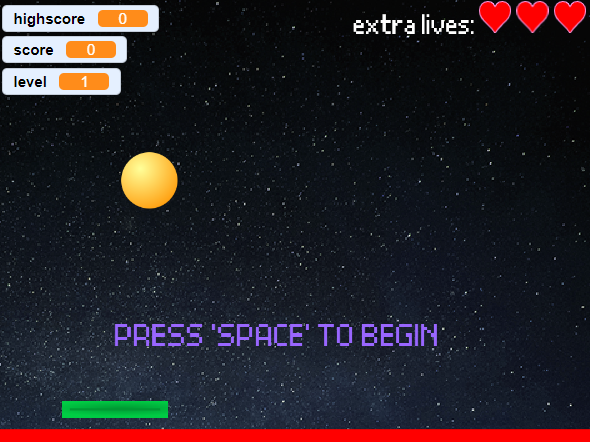
Scratch project
In deze opdracht moest ik een Pong spel maken met de software van Scratch.
Er waren minimale vereisten die ik moest maken, maar ook extra uitbreidingen.
De uitbreiding waarbij ik de weerkaatsing moest berekenen op basis van de hoek
en de positie waar de bal en de paddle elkaar raken, was een minder aangename ervaring.
Ik heb wel geleerd dat door doorzetting en zelfstandig opzoeken dat ik veel kan bijleren en alsook beter kan worden
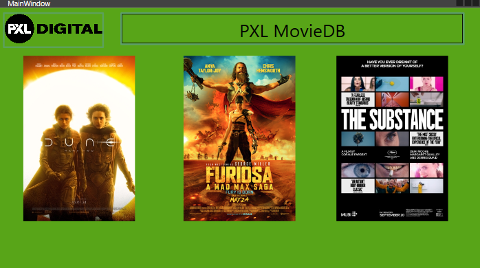
GIT taak 1
In deze opdracht moest ik een applicatie maken voor films in Visual Studio.
Er waren 3 foto's van filmen en als de gebruiker er dubbel op klikt dan moest de titel met een korte beschrijving tevoorschijn komen.
Ik wist nog niet goed hoe ik events moest activeren, maar na kort opzoeken was dat helemaal in orde.
Zelfstandig opzoeken is zeer effectief bij het leren van een programmeertaal.
Ik heb geleerd dat IT altijd een zelflerende richting zal zijn.
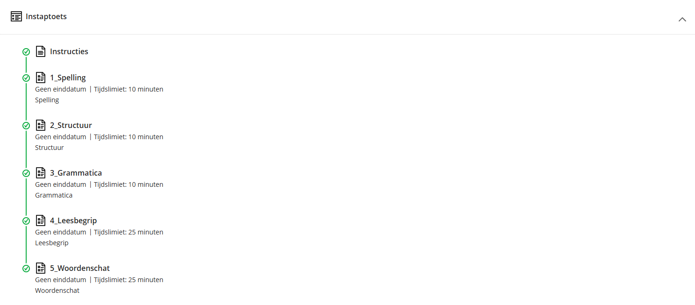

Oriënteringstraject
Nederlandse instaptoets
In deze opdracht moest ik een Nederlandse toets maken waardoor ik kon zien hoe goed mijn Nederlands was.
Er waren vijf secties waaronder: Spelling, Structuur, Grammatica, Leesbegrip en Woordenschat.
Woordenschat was wel een uitdaging voor mij.
Ik heb geleerd dat mijn Nederlands niet zo goed was als ik dacht en dat er toch aan gewerkt kan worden.
Lemo & KYSS
In deze opdracht moest ik vragenlijst invullen van LEMO die op basis van mijn antwoorden
resultaten geeft ivb mijn studiemotivatie en leervaardigheden.
Daarbovenop moest ik een KYSS vragenlijst invullen. Deze lijst ging over mijn soft skills en
gebaseerd op mijn antwoorden zijn mijn sterktes: creativiteit, analyseren en leerbereidheid.
Mijn werkpunten zijn: diversiteit, samenwerken, communiceren.
Hieruit heb ik geleerd dat er altijd ruimte is voor verbetering in mijzelf en mijn soft skills.
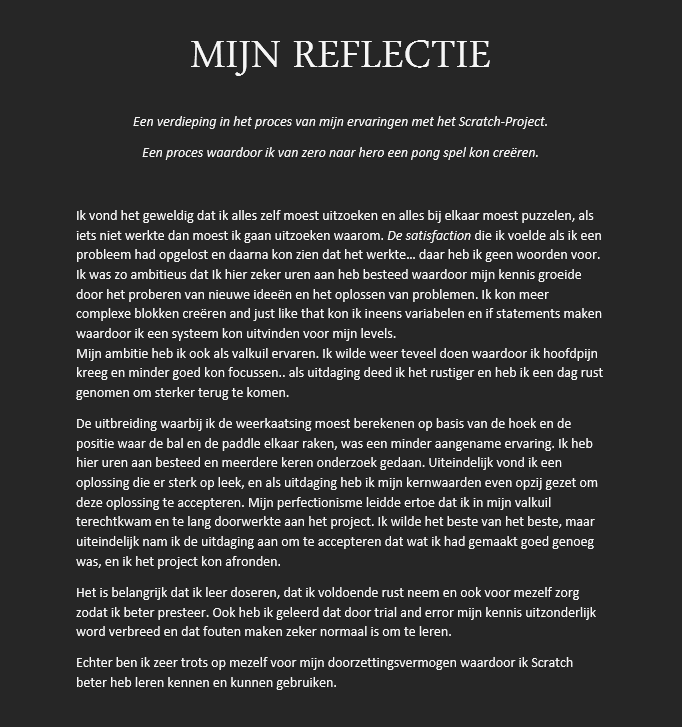
AIM-reflectie op scratch project
In deze opdracht moest ik een reflectie schrijven over het Scratch project 'Pong'.
Er moest ook een duidelijk link zijn met mijn kernkwaliteiten en kernwaarden die we in de klas moesten opschrijven.
Het linken van deze kwaliteiten en waarden was wel een grote uitdaging, omdat ik nog nooit zoiets hebben moeten doen.
Door deze opdracht heb ik wel geleerd dat kernkwaliteiten ook een valkuil hebben waardoor het Scratch project langer heeft geduurd dan nodig en
dat reflecteren wel handig kan zijn voor persoonlijke groei.
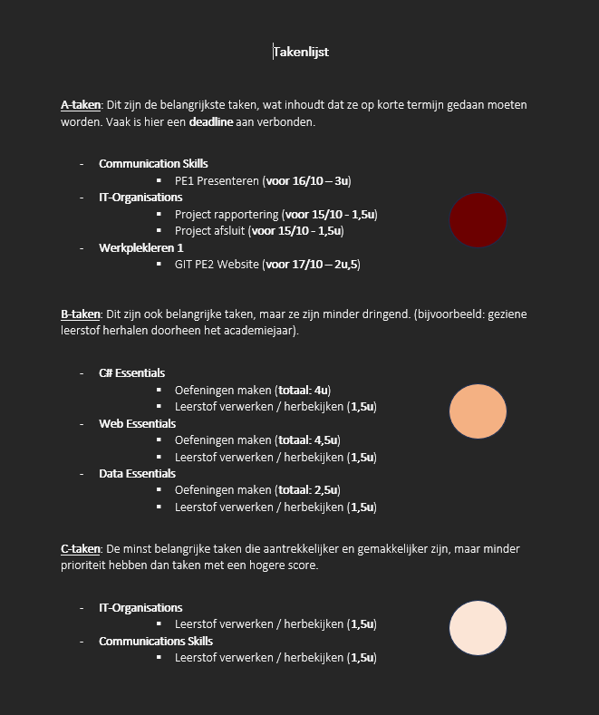
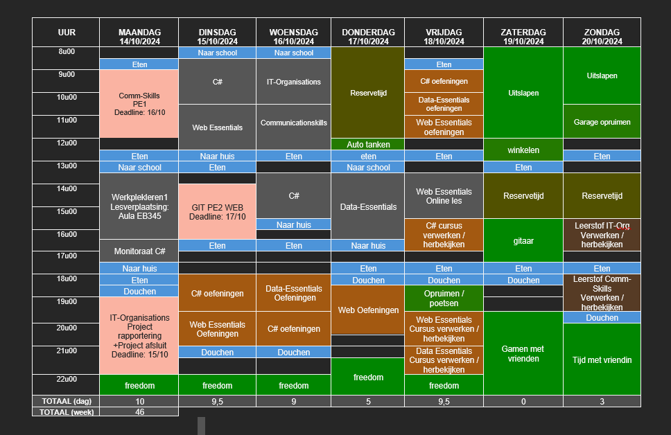
Planning en zelfsturing
In deze opdracht moest ik een kortetermijnplanning van één week voor de periode van 14 oktober tem 20 oktober
waarin zowel schoolwerk, lessen als ontspanning ingepland werd. Het doel was een overzicht te maken van mijn wekelijkse activiteiten.
Dit werd opgesplitst in 2 delen: Een takenlijst en een planning.
Takenlijst
Een lijst van mijn taken maken
De taken moesten opgedeeld worden in A-, B- en C- taken en terwijl ook voldoen aan de SMART-criteria:
(Specifiek, Meetbaar, Acceptabel, Realistisch, Tijdsgebonden).
Planning
In de planning moesten we (verplichte) lestijden invullen, dagelijkse activiteiten, verplichte ontspanningstijden en reservetijd.
Het was heel belangrijk dat de A-, B- en C- taken ook hierin werden verwerkt.
Dit ging vrij soepel zonder enige problemen.
Ik heb wel geleerd dat z'n takenlijst en planning een goed en efficiënt overzicht geeft van mijn week.
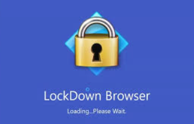
Reflectie gastsprekers
In deze opdracht moest ik een kleine reflectie schrijven via lockdown browser over 2 verschillen gastsprekers.
Dit was vrij simpel en kort. Alleen was het wel moeilijk om alles te herinneren van 2 verschillende onderwerpen.
Ik heb geleerd dat sommige bedrijven zeer dynamisch zijn en veel afwisseling aanbieden binnen IT, maar dat er ook bedrijven zijn
waar de IT afdeling zeer specifiek is.
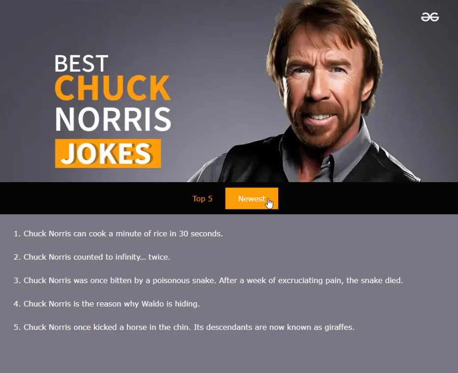
GIT taak 2
In deze opdracht moest ik een Github repo clonen en een website bouwen aan de hand van de vereisten.
Voor elke vereiste was er een aparte commit nodig en als eindresultaat moest de website zo goed mogelijk nagemaakt zijn.
Er was ook een flexbox nodig in de navigatie balk en dit was wel een uitdaging, omdat bij het hoveren over de link
de elementen samen animeerde en dat was niet de bedoeling. Uiteindelijk is het goed uitgekomen.
Ik heb hier uitgeleerd dat niet alles direct lukt en dat volhouden zeker en vast loont.
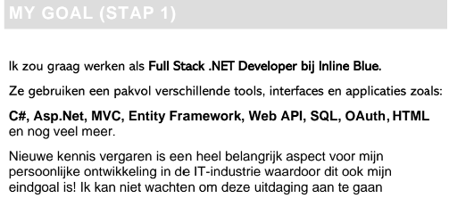
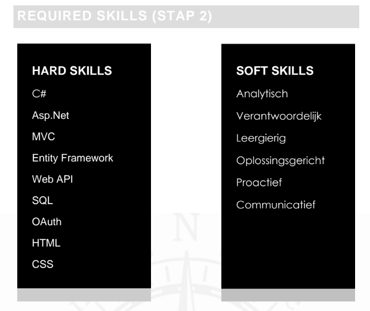
Werkveldverkenning: carrièrekompas
In deze opdracht moest ik een carrièrekompas maken over een vacature die ik over 10 jaar zou willen bereiken als doel.
De soft en hard skills eruit halen en oplijsten, maar ook vermelden welke skills ik al heb en welke nog niet.
Als tussenstop moest ik ook een vacature zoeken waarvoor ik direct in aanmerking kom na mijn studies en tegelijk ook een goede
voorbereiding is voor mijn doel (droomvacature over 10 jaar).
Alsook drie actiepunten noteren waar ik al zou kunnen aan beginnen om de nodige vaardigheden/eigenschappen verder te ontwikkelen.
De uitdaging hier was het uitzoeken van de soft skills die ik had en welke nog niet.
Door deze opdracht heb ik wel inzicht in wat ik nog moet ontwikkelen en/of verbeteren voor de toekomst.
C# project
Deze opdracht werd in 3 fasen gedeeld (sprints) en worden de competenties rond C# en WPF verbreed. Het doel is om zelfstandig aan de slag te gaan en mijn programmeertaal verder te ontwikkelen.
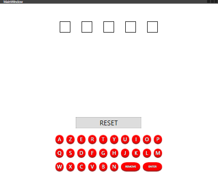
C# project - WORDLE-1
In de eerste sprint wordt er gefocust op het verwerken van input en output.
Ervoor zorgen dan de applicatie letters kan verwerken die de speler ingeeft.
De ingegeven letters worden gecontroleerd en feedback wordt terug gegeven aan de hand van kleuren.
Een grote uitdaging die ik tegenkwam waren de kleuren. Ik heb nog nooit met C# gewerkt en opeens alles zelf zoeken en vinden is toch wel ingewikkelder dan het lijkt.
Hierdoor ben ik wel begonnen met opzoeken en dat actie nemen zeker help bij het ontwikkelen van mijn C# skills.
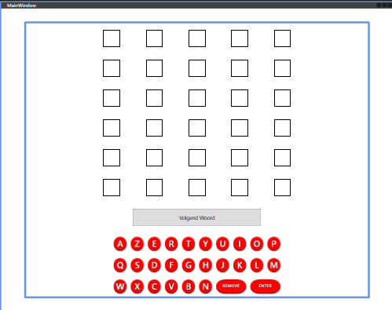
C# project - WORDLE-2
In de tweede sprint is het bedoeling om de applicatie van de eerste sprint verder uit te breiden met features.
In plaats van 1 poging zal de speler 6 pogingen hebben om het woord te raden.
Ook moet er een 'Volgend Woord' knop aanwezig zijn die het scherm terug op de startsituatie brengt
Er wordt ook een array geïmplementeerd zodat het er meerdere geheimen woorden kunnen worden opgeslagen waarvan het spel telkens een nieuwe kiest bij een nieuwe game.
De grootste uitdaging hier was ervoor zorgen dat de applicatie niet crasht bij elke raad poging en dat de focus verplaatste naar juiste invuldveld zonder te crashen.
Hieruit heb ik geleerd dat arrays zeer handig zijn om ervoor te zorgen dat de focus bij elke invoer (letter of enter) correct werkte.
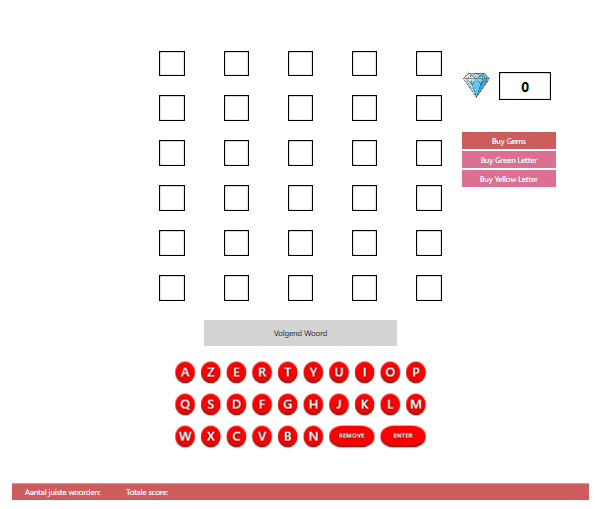
C# project - WORDLE-3
In sprint drie was de opdracht het implementeren van een businessmodel.
Met behulp van gekochte gems kan de speler hints kopen en zodanig hun hoogste score verbeteren.
Ik moest een betalingsysteem maken dat virtueel geld geeft (gems) en met die gems konden ze groene of gele letters kopen.
Deze letters werden in een debugmenu getoond met hun respectievelijke kleur, als de speler een gele letter kocht
dan werd deze tevoorschijn in de menu en alsook hun positie in het geheime woord.
Wanneer de speler een groene letter koopt dan verdwijnt er een gele letter als die hetzelfde is als de groene letter.
De grootste uitdaging hier was het gebruik maken van de LINQ functies: Contain(), Exist(), etc... en ervoor zorgen dat het debugmenu correct werd geupdated.
Hierdoor kan ik wel veel beter werken met LINQ functies.
Web project
Deze opdracht werd in 2 fasen gedeeld.
In de eerste fase wordt een CV uitgewerkt met focus op desktopversie.
In de tweede fase wordt de CV uitgebreid zodat de website responsief wordt en er ook goed uitziet op smartphones.
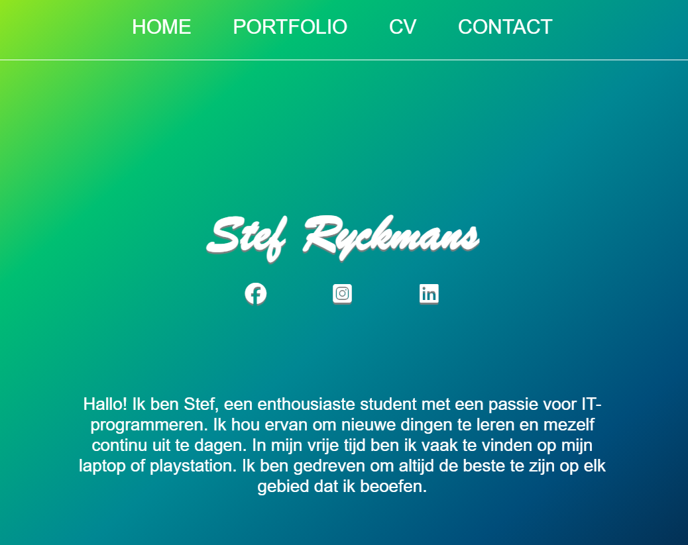
Web project - sprint 1
In deze sprint moest ik een website maken die een CV bevat.
De CV moest informatie bevatten zoals een introductie over mezelf, een foto, behaalde diploma's, vaardigheden/kennis en een lijst van werkervaringen.
CSS libraries en inline CSS waren verboden om te gebruiken.
HTML mocht alleen structuur bevatten en design werd gemaakt door een aparte CSS file.
Een kleine uitdaging was het correct structureren van HTML elementen zodat mijn CSS design goed uitpakt.
Ik maakte ook gebruik van animaties en transities, maar als de structuur niet juist is dan werkt het niet altijd evengoed.
Ik heb geleerd dat op voorhand een plan en/of schets te maken van een website zeer handig kan zijn en het proces efficiënter maakt.
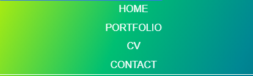
Web project - sprint 2
In deze sprint moest ik de website responsief maken zodat het goed uitziet op smartphones.
Echter waren er minimum vereisten zoals: tabellen op de desktopversie moeten iets anders worden als het scherm te klein wordt.
Elementen die niet naast elkaar passen moesten onder elkaar gezet worden. Hyperlinks en knoppen worden breder voor betere toegankelijkheid tijdens het klikken.
De tabel veranderen in een andere element was wel een uitdaging, maar uiteindelijk is het gelukt met 'display: block' of 'display: none'.
Door deze opdracht heb ik meer geleerd over media-queries en responsief design wat zeker in de toekomst zal helpen bij web design.
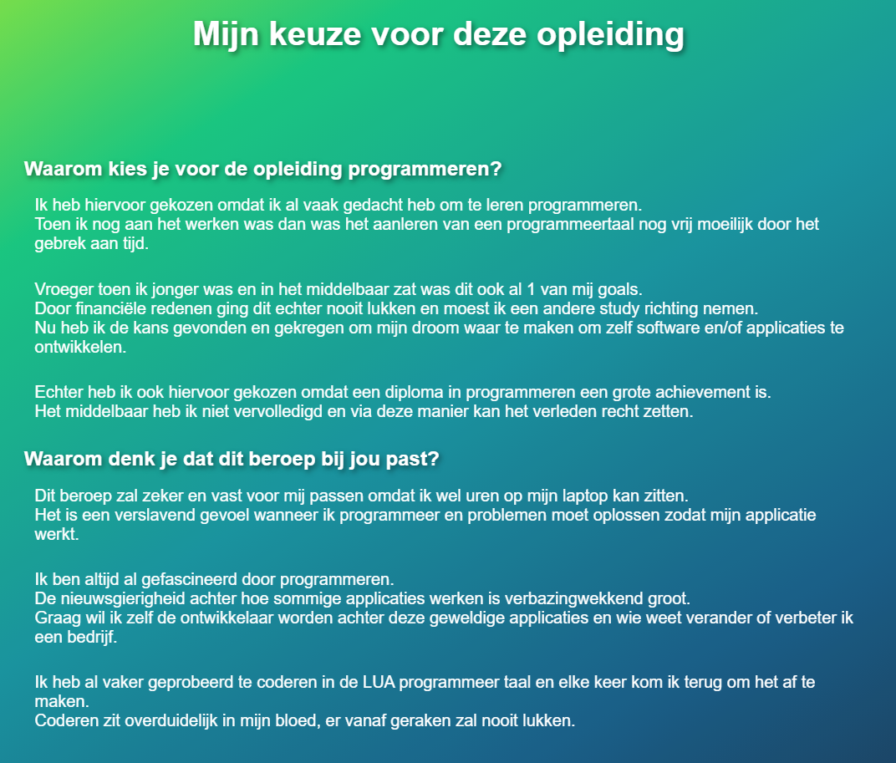
Portfolio
De portfolio is bedoeld voor mezelf (en PXL-coach/werkplekcoach), als
hulpmiddel bij reflectie op leer- en werkervaringen tijdens mijn
werkplekleren.
In deze opdracht moest ik een inleidende tekst schrijven als introductie tot de portfolio.
Ook moest er een logboek aanwezig zijn over de lessen van werkplekleren 1 met betrekking tot de planning van semester 1.
Een sectie 'ontwikkeling' waar mijn keuze voor deze opleiding wordt verteld en de competentie van een programmeur wordt uitgelegd.
Alsook een profiel situering over de competenties: Waar sta je momenteel? Wat lukt je al goed? Wat lukt je nog niet goed?
Een sectie 'opdrachten' waarin alle opdrachten van werkplekleren 1 chronologisch vermeld moest worden.
Elke opdracht moet een verzorgde beschrijving bevatten waarin de taak wordt beschreven met ook persoonlijke uitdagingen en wat ik heb bijgeleerd.
Een sectie 'reflectie' waarin ik moet reflecteren over 1 van de projecten (Web of C#) met de AIM-methode.
Een reflectie over 1 van de POP-sessies die ik heb gevolgd in de les en een reflectie over de X-factor uit het online leerpad.
Omdat ik later ben begonnen met mijn portfolio was het wel een uitdaging om elke opdracht met de juiste informatie te beschrijven.
Opdrachten die al een tijdje geleden zijn, zijn ook moeilijker te herinneren.
Ik heb geleerd dat reflecteren zeker en vast een goeie methode is voor persoonlijke groei en een speciale manier is om van mijzelf te kunnen leren.
PORTFOLIO - REFLECTIE
Reflectie Web Project
Een echte zoektocht en een eindeloos canvas waar ik mijn creativiteit kon loslaten.
Wat ik zeker bijzonder vond aan dit project was dat ik de layout zelf mocht ontwerpen.
Het was zeer leuk om hieraan te mogen werken van HTML structuur tot css layout.
De website zelf ontwikkelen en tot leven zien komen was zeer verslavend met een grote voldoening.
Wat me zeker heeft verrast is dat er veel animaties en transities mogelijk zijn met alleen CSS en dat dit niet alleen met Javascript nodig is.
Er waren ook wel frustraties bij de media-queries om mijn website responsief te maken en daarboven op
was het niet altijd even gemakkelijk om animaties te gebruiken.
Hierdoor was de layout niet consistent wanneer bepaalde element bewogen (door animatie) en liep alles ook mis.
De volgende keer ga ik beginnen met een website te schetsen zodat ik al goed zicht heb op de layout van mijn website.
Ook zou ik de HTML structuur (hierarchy) op voorhand kunnen bekijken zodat ik minder aanpassingen moet maken achteraf tijdens het responsief maken van mijn design.
Echter vind ik het wel een persoonlijk succes dat de website uiteindelijk is gelukt en dat ik door veel proberen en opzoeken heel veel ben te weten gekomen.
Door deze website te maken heb ik veel bijgeleerd waardoor ik nu met meer zekerheid een website kan designen
Reflectie POP-sessie planning en zelfsturing
Ik heb geleerd dat een planning maken goed is voor timemanagement.
Ook om uitstelgedrag te voorkomen en tijd efficiënter te gebruiken, maar ook duidelijke doelen te maken van een project.
Het geeft ook rust om alle taken te organiseren en daar een mooi overzicht van te hebben ipv alles te moeten herinneren.
Deze leerstof zal zeker van pas komen als dagelijkse programmeur om een beter overzicht te hebben van alle taken in grote projecten.
Dan weet ik ook welke taken belangrijk zijn en welke minder dringend.
Aan de hand van een planning kan ik ook tijdzones inplannen voor verdere ontwikkeling van mij capaciteiten als IT'er, omdat programmeurs continue lerende professionals zijn.
Een planning zal er ook voor zorgen dat mijn taken op tijd klaar zijn en dat er geen extra tijdsdruk zal zijn.
Reflectie X-Factor
(em)passie
ondernemend & innovatief
(internationaal) samen(net)werken
multi- & discipliniteit
X
(em)passie
Ik heb een enorme passie voor computers en gamen
Zolang als ik mij kan herinneren wil ik al zelf software en/of games ontwikkelen
waardoor ik ook al voor de opleiding een beetje kennis had van programmeertalen.
Daarom dat ik ook voor deze opleiding heb gekozen.
Ik ben ervan bewust dat er in deze opleiding zeer veel wordt samengewerkt.
Daarom dat open communicatie met respect voor anderen zeer belangrijk is voor een goeie samenwerking.
Van nature toon ik al veel respect naar anderen toe, maar mijn communicatie zou nog beter kunnen worden.
ondernemend & innovatief
Ik ben niet altijd even ondernemend, dit kan op sommige momenten verschillen.
Hetzelfde voor initiatief nemen en ik denk dat dit af hangt van hoe goed ik mezelf voel.
Ik kan zeer veel zelfvertrouwen hebben, maar op slechte momenten kan dit veranderen.
IT is een altijd groeiende en innoverende sector en dus ook zeer belangrijke soft skills in deze opleiding.
In een bedrijf is het belangrijk dat elke programmeur creatief en innoverend kan zijn om uiteindelijk problemen te kunnen oplossen en ook nieuwe features te kunnen uitvinden.
Persoonlijk vind ik dat ik deze soft skills al grotendeels bezit, maar hoe meer ik programmeer hoe meer creatief ik word.
(internationaal) samen(net)werken
Mijn netwerk bestaat uit mijn klasgenoten en dus kan ik nog niet echt iets inzetten behalve hulp vragen of assistentie bieden doorheen de opleiding.
Ook kunnen we van elkaar leren, opdrachten vergelijken en onze kennis verbreden.
Ik ben me ervan bewust dat samenwerken en goed functioneren van zeer groot belang zal zijn om grote project moeiteloos te kunnen volbrengen.
Persoonlijk heb ik nog niet veel projecten met een team gedaan, maar in deze opleiding zal dat zeker en vast snel groeien!
Semester 2 van werkplekleren zal allemaal rond samenwerken draaien waardoor we allemaal hierin gaan groeien.
multi- & discipliniteit
De graduaats opleiding is gemaakt om studenten praktijkgerichte ervaring te geven en het bedrijfslevel te simuleren.
Het is ook bedoeld om onze soft en hard skills verder te ontwikkelen en klaar te stomen voor het echte werk.
Hoe langer ik deze opleiding ga volgen zal ik meer zicht krijgen op de discipline, het beroep en het werkveld.
Deze opleiding is bedoeld om grenzen te overbruggen tussen verschillende vakgebieden om nieuwe inzichten, ideeën en oplossingen te creeëren.
De lessen van werkplekleren zijn gemaakt om ons verder te ontwikkelen en onze disciplines te verbreden.
Er is nog veel groei mogelijkheid voor mezelf op dit vlak en de volgende semesters zullen hier vaal baat bij hebben.